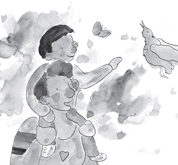

THE ARIO
INFORMATION FOR ADULTS
FEELING SAFE COMES FROM THE HEART
HOW CAN CHILDREN FEEL SAFE?
With the challenges of COVID-19, all children need support. Feelings of safety come from adults like moms, dads, grandparents, nannies, teachers and religious leaders. Where children live or the amount of money, toys, food or clothes that adults give are not what helps children feel safe.
Feelings of safety come from the heart. Adults offering sincere, compassionate support is what makes children feel safe. Feeling safe will allow the children to cope with the challenges that now surround them.
CHATTING WITH A CHILD WITH A PROBLEM
Teachers or other adults reading the story to a group, need to take care in speaking with children about their problems in front of other children. If a child mentions a specific personal problem during the group reading, it is best to ask the child to talk about it with you after the reading. Always best to sit with the child separately to talk about how this child can feel safe.
It is particularly important to listen when a child says, “I never feel safe.”It could take a long time to discuss this and understand why and what to do.
Whether you are the child’s parent or teacher, your response is similar. Since you are in the middle of reading a storybook, it is probably best to say to the child, “I am sorry to hear this. I would like to talk to you more about why you feel this way and what I can do to help. Let’s read the story now and right after we can talk about it.” Then, be sure, to make time to talk to this child about the fears and find ways for this child to feel safe.
GIVING HUGS?
Depending on the relationship with the child, we have different way to physically show support. Parents or caregivers can give their children lots of hugs during and after the story to help them feel safe.
At school, with children wearing masks it is hard to see their emotions so we need to ask how they feel since we cannot rely on body language.
Teachers cannot hug children freely so they need to find the ways that are best in their culture to show their support. They can say to the children, “Let’s all give ourselves a hug.”
Teachers can hugs themselves and teach the children how to wrap their arms around themselves and give themselves a hug. Adults can remind children that giving themselves a hug when they feel scared or sad can be helpful at any time.
